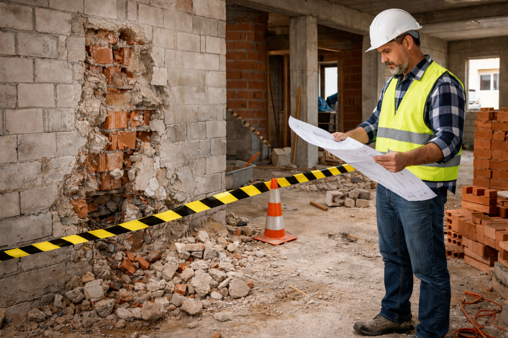
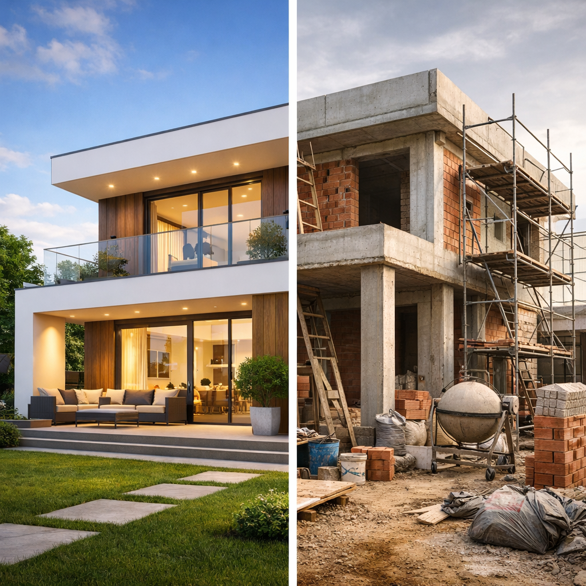
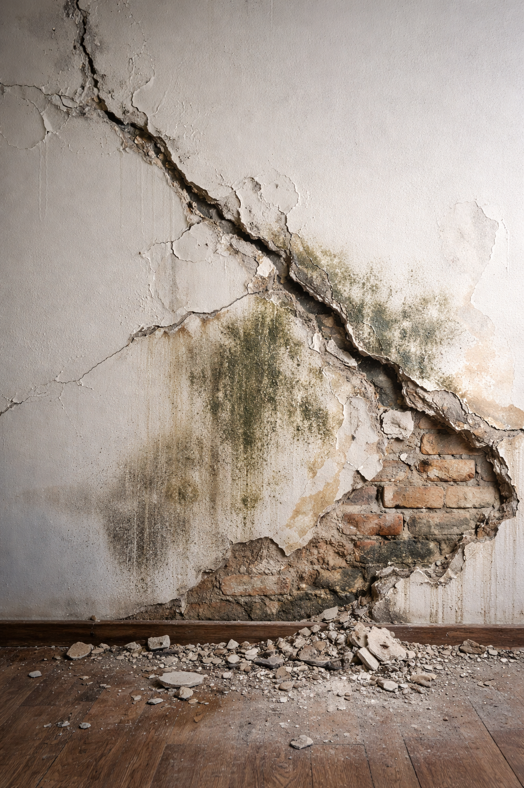

Blog de Qudra Constructora

Los 10 errores más costosos al construir una casa (y cómo evitarlos)
Construir una casa puede ser el proyecto más emocionante de tu vida — o el error financiero más grande si se hace sin planificación técnica.
La mayoría de los sobrecostos y fallas no empiezan en la obra, empiezan en decisiones mal tomadas desde el día uno.
Antes de poner el primer ladrillo, conoce los errores que más caro le cuestan a quienes construyen sin método.
Leer más

Lo que nadie te dice antes de empezar una obra
Antes de empezar una obra, casi todos miran el diseño, el presupuesto y el resultado final… pero muy pocos entienden lo que realmente ocurre durante la ejecución.
Ahí es donde aparecen los retrasos, los costos ocultos y las decisiones que cambian todo el proyecto.
Si vas a construir, hay verdades que casi nadie te dice — y conocerlas puede ahorrarte tiempo, dinero y muchos dolores de cabeza.
Leer más

Señales de que una obra está mal ejecutada (y cómo detectarlas a tiempo)
Una obra puede verse terminada por fuera y aun así estar mal ejecutada por dentro.
Grietas tempranas, humedades, desniveles o instalaciones improvisadas suelen ser señales de alerta que muchos detectan cuando ya es tarde.
Aprender a reconocer estos indicios a tiempo puede ahorrarte reparaciones costosas y proteger tu inversión.
Leer más

Humedades y filtraciones: el enemigo silencioso de las construcciones
La humedad no siempre se nota al principio, pero cuando aparece puede dañar acabados, debilitar materiales y generar reparaciones costosas.
Muchas filtraciones no se deben al clima, sino a detalles mal resueltos en diseño o ejecución.
Entender cómo y por dónde entra el agua es clave para proteger cualquier construcción a largo plazo.
Leer más